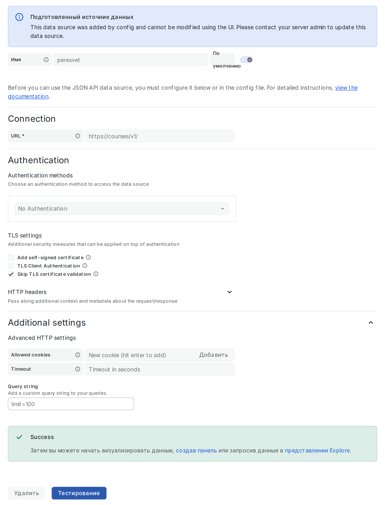
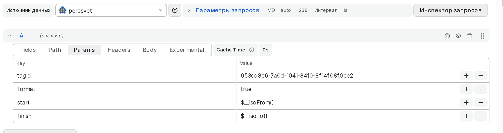
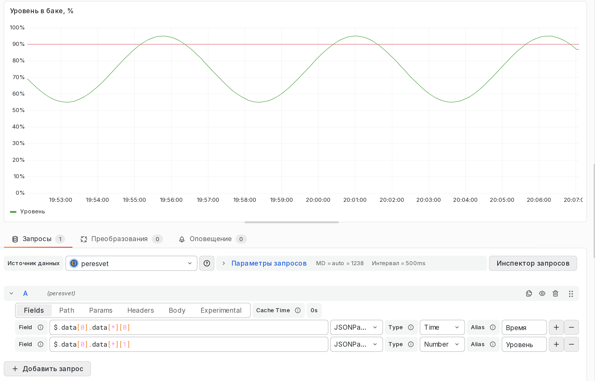
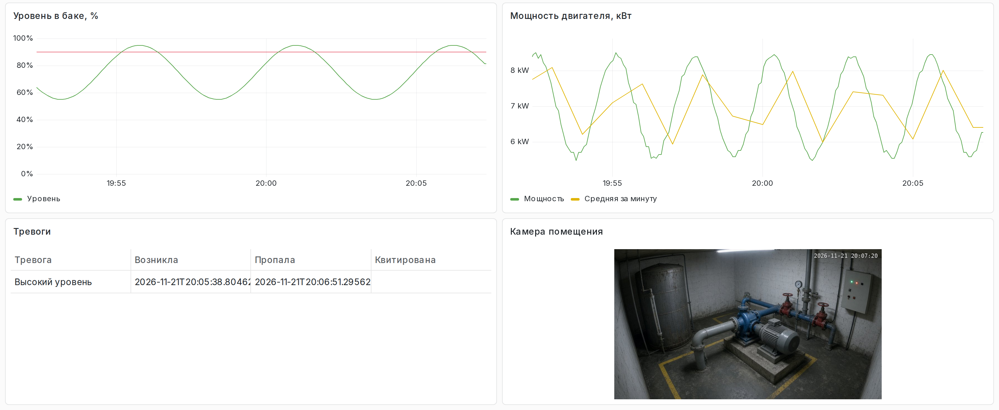

Сводка: тренды, тревоги и кадр камеры
- проверять источник данных Grafana, через который экраны получают данные платформы;
- строить тренды тегов, таблицу тревог и кадр камеры на одном экране.
Экран «Насосная станция» в Grafana каждые 10 секунд показывает тренды уровня и мощности, тревоги и свежий кадр камеры помещения. Все данные приходят через модель: экран знает только идентификаторы тегов и объектов.
Конфигуратор, в котором мы работали весь курс, — это тоже экран Grafana. Рядом с ним можно строить экраны для операторов. Данные экран берёт у платформы теми же запросами, которыми пользуется Конфигуратор: история тегов и список тревог. Откуда приходят значения — от имитатора, от метода или из видеоархива, — экрану неважно.
Имитатор из урока 6 и исполнитель из урока 4 должны работать: тогда графики будут живыми.
Источник данных
Grafana получает данные через источник данных. Для платформы подходит источник типа JSON API: он отправляет HTTP-запрос и достаёт из ответа нужные поля. Плагин JSON API и источник peresvet на его основе создаются при установке платформы.
Откройте Grafana по адресу https://192.168.1.87/grafana/ (подставьте адрес своей виртуальной машины). В меню слева выберите «Подключения → Источники данных» и откройте peresvet. В поле «URL» — адрес API платформы, https://<имя сервера>/v1/. В блоке «TLS settings» включён пропуск проверки сертификата: у платформы самоподписанный сертификат. Источник задан в файле настроек, поэтому из интерфейса его поля не меняются — об этом говорит плашка «Подготовленный источник данных».
Нажмите Тестирование внизу страницы. Ответ «Success» значит, что Grafana достучалась до платформы.

Если проверка не проходит
Значит, Grafana не достучалась до адреса из поля «URL». Заведите свой источник: «Добавить новый источник данных» → JSON API. В поле «URL» укажите https://<адрес виртуальной машины>/v1/ — со слэшем в конце, в блоке «TLS settings» включите Skip TLS certificate validation и нажмите «Сохранить и протестировать». Адрес http://… не подходит: платформа перенаправляет его на HTTPS, и Grafana остаётся без данных. Дальше в уроке выбирайте этот источник вместо peresvet.
Тренд уровня
В меню слева выберите «Дашборды», нажмите «Новые элементы → Новый дашборд», затем «Добавить визуализацию». Выберите источник peresvet — он стоит в списке источником по умолчанию. Откроется редактор панели, тип панели справа вверху — Time series. Справа в поле «Заголовок» впишите Уровень в баке, %.
Внизу — запрос «A». У источника JSON API запрос настраивается на нескольких вкладках:
- Path — путь запроса относительно адреса источника:
/data/. Метод оставьтеGET; - Params — параметры запроса, те же, что в строке
GETна вкладке «Запрос на чтение» в Конфигураторе; - Fields — какие поля достать из ответа.
На вкладке Params добавьте четыре строки. Идентификатор тега «Уровень» скопируйте в Конфигураторе:
| Key | Value |
|---|---|
tagId | идентификатор тега «Уровень» |
format | true |
start | $__isoFrom() |
finish | $__isoTo() |

$__isoFrom() и $__isoTo() Grafana заменяет на начало и конец периода, выбранного на экране. Сменили период — Grafana запросит историю за новый.
Платформа отдаёт каждую точку массивом [время, значение, качество]. На вкладке Fields объясните Grafana, где что лежит: две строки, кнопка «+» добавляет вторую.
| Field | Type | Alias |
|---|---|---|
$.data[0].data[*][0] | Time | Время |
$.data[0].data[*][1] | Number | Уровень |
В поле Cache Time справа от вкладок поставьте 0s: иначе источник пять минут отдаёт сохранённый ответ, и график не обновляется. На панели появился тренд уровня.

Граница 90 % на графике
Красная линия на графике — граница тревоги из урока 5. В настройках панели справа найдите блок «Пороговые значения»: задайте значение 90 красным цветом, а в поле «Показывать пороговые значения» выберите «В виде линий».
Нажмите «Сохранить дашборд» справа вверху и назовите экран Насосная станция. Затем «Назад на дашборд».
Тренд мощности
Добавьте вторую панель Time series с заголовком Мощность двигателя, кВт. Запрос «A» настройте так же, как для уровня, только с идентификатором тега «Мощность» и с Alias Мощность. Затем нажмите на запросе кнопку «Дублировать запрос» и в копии «B» поменяйте идентификатор на тег «Средняя мощность», а Alias — на Средняя за минуту.
На одной панели две линии: мощность на каждое значение тока и средняя мощность по минутам — результат метода по расписанию из урока 7.
Почему в легенде «A Мощность» и «B Средняя за минуту»
Когда на панели несколько запросов, Grafana приписывает к имени линии имя запроса. Чтобы осталось только имя, в настройках панели справа, в блоке «Стандартные параметры», впишите в поле «Отображаемое имя» значение ${__field.name}.
Тревоги
Добавьте панель типа Table с заголовком Тревоги. Запрос — тот же, что в списке тревог Конфигуратора из урока 5, с флажками getChildren и format и со снятым fired:
- Path —
/alarms/; - Params —
parentIdс идентификатором объекта «Цех»,getChildren=true,fired=false,format=true; - Cache Time —
0s.
getChildren=true добавляет тревоги всех потомков «Цеха». С fired=false платформа возвращает не только активные тревоги, а каждую тревогу с её последним срабатыванием — активную, пропавшую или квитированную. Получается табло: по строке на тревогу. Тревог в ответе может быть несколько, поэтому в полях стоит [*] — взять значение у каждой:
| Field | Type | Alias |
|---|---|---|
$.data[*].cn | String | Тревога |
$.data[*].fired | String | Возникла |
$.data[*].finish | String | Пропала |
$.data[*].acked | String | Квитирована |
Объект «Цех» взят потому, что в таблицу попадут тревоги и «Насоса», и объектов, которые появятся в цехе позже. Строка «Высокий уровень» стоит в таблице всегда и показывает последнее срабатывание. Пустой столбец «Пропала» значит, что тревога активна, пустой «Квитирована» — что она ждёт оператора. Квитируют тревогу в Конфигураторе, в списке тревог «Насоса».
Кадр камеры
Добавьте панель типа Text с заголовком Камера помещения. В её настройках выберите режим «HTML» и вставьте в поле содержимого строку, подставив идентификатор тега «Камера»:
<img src="/v1/data/?tagId=ecf2ad1a-7a15-1041-8454-8f14f08f9ee2&finish=${__to:date:iso}" style="width:100%; height:100%; object-fit:contain">Это тот же запрос кадра на момент finish, что в строке GET на вкладке «Хранилище» тега «Камера» в уроке 8. Вместо даты стоит ${__to:date:iso} — конец периода экрана: при периоде «Последние 30 минут» это текущий момент. Адрес начинается с /v1/ без имени сервера: Grafana и платформа работают на одном сервере, и браузер сам подставит его адрес.
Экран целиком
Расставьте панели мышью: тренды сверху, тревоги и камера снизу. Справа вверху выберите период «Последние 30 минут», а в списке рядом с кнопкой «Обновить» — 10s: экран будет перезапрашивать данные каждые 10 секунд. Сохраните дашборд.

Уровень ходит волной и пересекает границу 90 %. При каждом пересечении строка «Высокий уровень» в таблице обновляется: в «Возникла» — новое время, а «Пропала» пуст, пока уровень выше границы. Мощность меняется вслед за током, а средняя за минуту сглаживает её колебания. Кадр камеры обновляется вместе с экраном.
Проверка
- Проверка источника данных
peresvetотвечает «Success». - Экран «Насосная станция» показывает тренды уровня и мощности за выбранный период.
- В таблице «Тревоги» есть «Высокий уровень»; пока уровень выше 90 %, столбец «Пропала» пуст.
- На панели «Камера помещения» виден кадр камеры, и он обновляется каждые 10 секунд.
Базовый курс пройден. Модель насосной станции собрана целиком: теги и объекты, расчёт, тревога, данные от программы, итоги по расписанию, камера и экран оператора. Подробности каждой темы — в справочнике и в расширенном курсе.